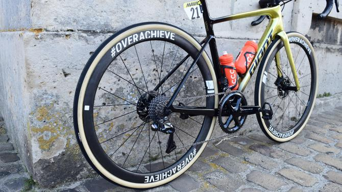
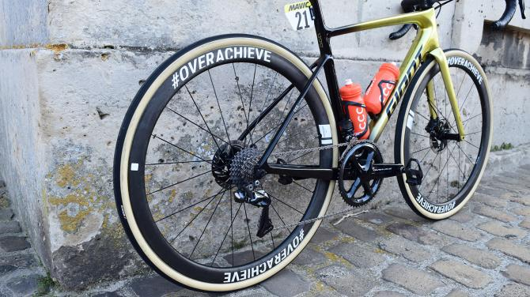

CCC 车队的范·阿维马特在上周日的巴黎-鲁贝中，使用了一辆黄金奥运冠军涂装的Giant Defy ADV SL。

由于都是黄金奥运冠军涂装，加上一体座管，乍一看还以为“范二维码”使用TCR ADV SL出战。由于最新款的DEFY并没推出一体座管版本，所以这个车架应该是上一代的2017款Defy。
出处 : CyclingNews 作者 : Josh Evans
CCC 车队的范·阿维马特在上周日的巴黎-鲁贝中，使用了一辆黄金奥运冠军涂装的Giant Defy ADV SL。
由于都是黄金奥运冠军涂装，加上一体座管，乍一看还以为“范二维码”使用TCR ADV SL出战。由于最新款的DEFY并没推出一体座管版本，所以这个车架应该是上一代的2017款Defy。
